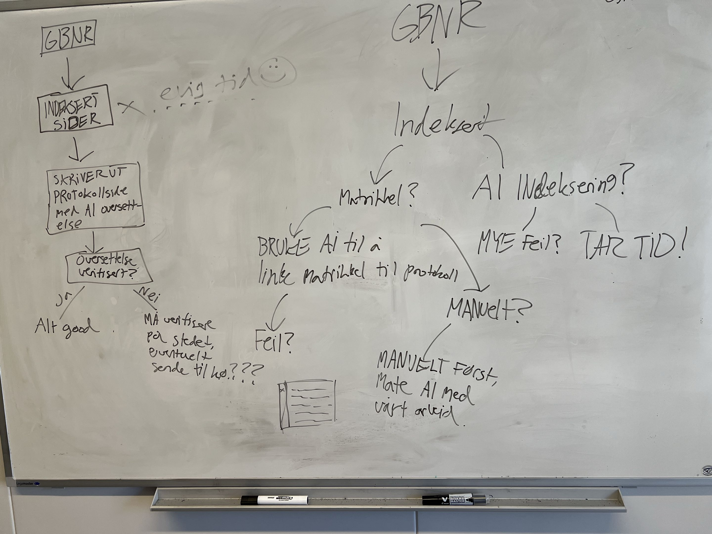

Praksisprosjekt ved UiA · Kristiansand kommune
Status 1
Om praksisstedet
Vi har praksis i plan og bygg i Kristiansand kommune. Her jobber vi med gamle arkivdokumenter som må moderniseres og gjøres lettere tilgjengelige. Noen av dokumentene er fra tidlig på 1900-tallet, noe som gjør både tyding og strukturering av innholdet utfordrende.
Arbeidsoppgaver og fremgang
Hittil har vi hatt en gjennomgang av to caser som vi skal jobbe videre med i praksisperioden. Alle har jobbet med den første casen i starten. Vi har fått tilgang til kommunens GeoDoc, hvor vi skal transkribere matrikkelkort. Kortene inneholder protokollnumre knyttet til gårds- og bruksnumre (Gnr/Bnr), som er viktig informasjon for oppmålingsvesenet. Så langt har vi overført innhold fra over 6600 PDF-filer til Excel-ark.
Vi begynte med å lage egne Python-skript som skulle dele opp dokumentene og bruke OCR-modeller med åpen kildekode til å transkribere innholdet til en flat Excel-tabell. Vi fant raskt ut at dette gikk mye fortere enn med generativ KI, men at nesten ingenting ble riktig.
Derfor gikk vi over til å bruke KI-agenter med modellene Claude Fable 5.1 og GPT Terra 5.6 til å transkribere filene og overføre innholdet til hvert vårt Excel-ark. Dette fungerte veldig godt. Vi behandler typisk bolker på 100 matrikkelkort om gangen og tar stikkprøver i etterkant for å kontrollere kvaliteten.

Utfordringer og veien videre
En av de største utfordringene har vært å finne effektive løsninger for å automatisere store arbeidsoppgaver. Målet er å lage en prosess vi kan følge med på og kvalitetssikre, slik at vi slipper å gjøre hele jobben manuelt.
Det har vært spennende å se hvordan KI kan brukes til å gjøre gamle arkiver mer tilgjengelige, samtidig som vi har erfart hvor viktig det er å kontrollere resultatene. Fremover vil arbeidet innebære mer koding og utvikling.